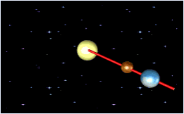

Dialog Astronomie und Planetenbewegung
Dieses Dialogfenster erhält man über den Menüeintrag Einzelverfahren \ Anwendungen des Chinesischen Restsatzes \ Astronomie und Planetenbewegung.
Dieser Dialog gibt Ihnen die Möglichkeit, eine Anwendung des Chinesischen Restsatzes (CRT) in der Astronomie nachzuvollziehen.
Mit diesem Dialog können Sie bis zu 9 Gleichungen der Form x ≡ ai mod mi (für alle i = 1, ..., 9) eingeben und anschließend lösen.
Dabei existiert immer eine eindeutige Lösung x, wenn alle mi , mj (i, j = 1, ..., 9) paarweise teilerfremde, natürliche Zahlen größer als 1 sind.
Solche Gleichungssysteme kann man nutzen, um herauszufinden, in wie viel Tagen bestimmte Planeten aufgereiht wie auf einer Perlenschnur hintereinander in einer Linie (Strahl) stehen oder wie man einen Code bauen kann, so dass immer 3 von 5 Menschen einen Tresor öffnen können (Secret Sharing mittels CRT).
Voreinstellung (Initialisierung):
Wird die Anwendung neu gestartet, so gilt folgende Voreinstellung:
Es wurden die zwei Planeten Merkur (braun dargestellt) und Erde (blau dargestellt) ausgewählt, die sich mit konstanter Geschwindigkeit um die Sonne (gelb dargestellt) bewegen.
In unserem Beispiel benötigt Merkur für eine Umrundung der Sonne 88, die Erde 365 Tage. Bis zum Erreichen eines bestimmten Bahnradiusvektors s (rot dargestellter Strahl) benötigt Merkur 15 und die Erde100 Tage.
Man kann nun mit dem Chinesischen Restsatz berechnen, nach wievielen Tagen sich Merkur und Erde einmal gleichzeitig auf diesem vorgegebenen roten Strahl s befinden.

Dabei ist die Animation symbolisch gemeint ist, das heißt:
Die Zahlenunterschiede (genauer die Unterschiede in den gemeinsamen Teilern) führen dazu, dass sich das Ereignis „Perlenkette Erde-Merkur“ im Bild alle 12 Umläufe des Merkur = alle 3 Umläufe der Erde wiederholt, in der Realität jedoch nur alle 32.120 Tage.
Vorgehensweise bei der Auswahl eines Planeten:
1. Eine Gleichung der Form x ≡ a mod m stellt genau einen Planeten dar.
2. Die benötigte Zeit (in Tagen), bis ein Planeten den roten Bahnradiusvektor s erreicht, wird im ersten Feld (Variable a) einer Zeile eingegeben.
3. Die Umlaufdauer (in Tagen) eines Planeten kann entweder manuell im zweiten Feld (Variable m) der jeweiligen Zeile eingegeben werden oder automatisch durch ein Häkchen in der Sektion Planetenauswahl ausgewählt werden.
Für den Merkur lautet die Gleichung daher x ≡ 15 mod 88 und für die Erde x ≡ 100 mod 365.
Nach einem Klick auf die Schaltfläche Lösen wird eine Lösung des simultanen Gleichungssystems berechnet und im Ausgabefeld Lösung angezeigt. Für unser Beispiel erhalten wir als Lösung 2.655 Tage.
Gleichzeitig wird berechnet, nach welchen Zeitabständen (in Tagen) sich dieses Ereignis wiederholt. Das Ergebnis 32.120 Tage wird in dem letzten Ausgabefeld unter der Animation angezeigt.
Der Benutzer hat im Dialog entweder die Möglichkeit, durch einen Klick auf den Button Löschen aller Parameter, alle Felder zu löschen, oder durch einen Klick auf den Button Zurücksetzen auf den Initialzustand, das Merkur-Erde-Beispiel wiederherzustellen.
Mit einem Klick auf den Button Beenden verlässt man das Dialogfenster und kehrt zurück zum CrypTool-Hauptfenster.
Wenn die eingegebenen Moduln mi nicht paarweise teilerfremd, wird dies dem Benutzer ähnlich wie in der folgenden Nachricht angezeigt:
Wenn Sie den Button OK drücken, wird mit einem Brute-Force-Algorithmus versucht, das simultane Gleichungssystem zu lösen. Wenn der Brute-Force-Algorithmus keine Lösung findet, wird dies dem Benutzer über eine Nachricht mitgeteilt:
Erweiterung des Szenarios:
Der Benutzer hat die Möglichkeit, mit bis zu 9 Planeten das Szenario zu erweitern und unser komplettes Sonnensystem darzustellen.
Unabhängig vom dargestellten Astronomiebeispiel können mit dieser Anwendung simultane modulare Gleichungssysteme mit bis zu 9 beliebigen ganzen Werten für die Parameter berechnet werden.
In dem Dialog können Sie über die Taste F1 jederzeit eine kontextbezogene Hilfe erhalten, falls Sie Fragen zur Bedienung des Dialoges oder zur Animation haben.
zum Anfang